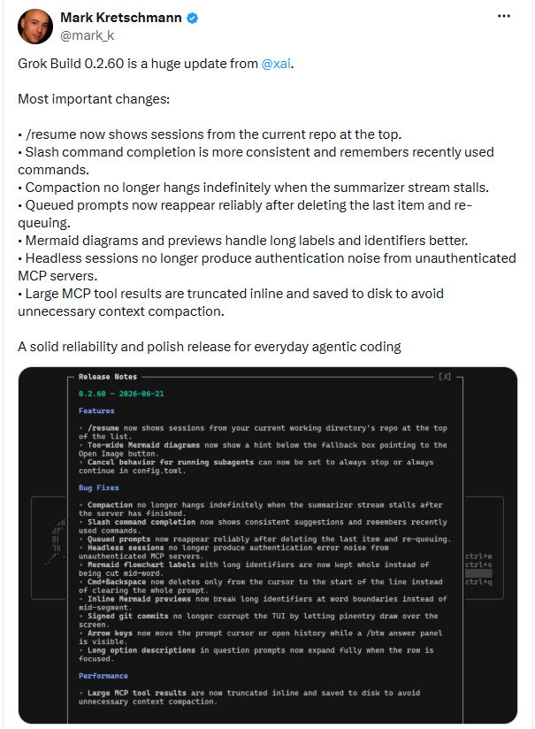
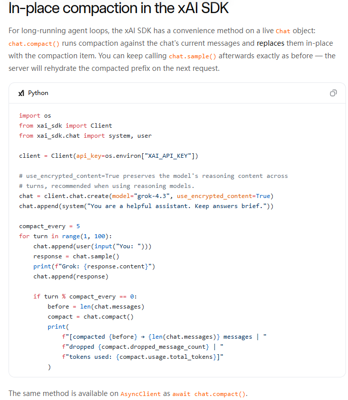

Musk Redirects the Battle: Grok Build 0.2.60 Takes Aim at Agent Runtime
These adjustments, while less conspicuous than model enhancements, signal a shifting competitive axis within AI programming tools. As model capabilities reach parity, the decisive factor in Agent experience is no longer raw intelligence, but the ability to perform reliably and persistently.
Appreciating the significance of this shift requires tracing the evolution of competitive priorities in AI programming tools.

The evolution of Coding Agents is divisible into three distinct phases. Initial research centered on code-generation capability — whether AI could complete code snippets and generate functions. Subsequent focus turned to autonomous workflow execution: understanding project architectures, performing cross-file edits, and passing test suites.
In the Agent era, the fundamental challenge is sustained, reliable task execution: restoring context correctly across multiple repositories, maintaining controllability throughout task execution, resisting degradation from voluminous tool-output logs, and operating continuously in semi-automated or fully unattended environments.
It is within this context that Grok Build was developed. It is not a conversational coding assistant but a terminal-based Coding Agent engineered to participate in authentic, end-to-end software engineering workflows: repository comprehension, planning, tool invocation, file modification, command execution, user-confirmation gating, and task continuation.
Official xAI documentation indicates that Grok Build supports interactive usage, scripted execution, external tool connectivity, and multi-session management. The significance of version 0.2.60, therefore, is not aesthetic improvement in code generation, but the ability to execute project tasks reliably from initiation through completion.
The challenges an Agent confronts, therefore, are not code-level defects but operational friction from real-world workflows. When a developer navigates between multiple repositories, the correct session must be restored. When long-running tasks accumulate history, context compression must sustain rather than stall the process. When tools return voluminous output, the system must curate and condense rather than indiscriminately feed raw data back into the model.
In essence, this release signals a pragmatic reorientation: AI Coding Agents must transcend mere code generation and deliver stable, continuous, and recoverable engineering task execution.

01
Three Key Engineering Remediations for Agents
Distilled to its essence, this release addresses three critical friction points: session restoration difficulty, long-task stalling, and context contamination from tool output. Ancillary fixes — addressing UI anomalies from command completion, chart previews, and similar features — converge on the same objective: rendering the AI coding assistant more stable and controllable within authentic development workflows.
Session recovery exemplifies this category. For a Coding Agent, a session constitutes far more than a chat transcript — it encapsulates repository structure, user intent, executed commands, pending modifications, and subsequent plans.
When a developer navigates between multiple repositories and /resume continues to display a global session list, the burden falls on the user to identify the correct session — a process that is both tedious and error-prone.
The remedy in 0.2.60 is pragmatic: /resume now prioritizes sessions from the current working directory's repository. The logic is simple yet aligns naturally with developer cognition: entering a project directory implies intent to continue that project's work. When an Agent organizes memory along repository boundaries, the cognitive overhead of context restoration is substantially reduced.
A second critical issue is long-task degradation. As an Agent accumulates dialogue, tool invocations, file reads, and test outputs over extended runtime, the system must periodically compress history to keep the model operating within a controllable context window.
Per xAI's official documentation, Context Compaction is designed to condense extended conversations into reusable Opaque Items, thereby reducing input costs, minimizing latency, and sustaining long Agent Loops. In practice, however, Compaction can introduce its own bottleneck: if the Summarizer's output stream stalls during summary generation, the compression routine may wait indefinitely, bringing the entire task to a halt.

Version 0.2.60 resolves the indefinite hang condition during Compaction when the Summarizer Stream stalls. Public documentation does not disclose the underlying mechanism — whether timeout, retry, or fallback — but the outcome, at minimum, forestalls the scenario in which the context-maintenance mechanism itself precipitates task failure.
The Queued Prompts remediation addresses a similar reliability concern. Developers frequently pre-enter subsequent instructions while an Agent is executing, placing them in a processing queue. If the final prompt in that queue is deleted and a new prompt subsequently added, the system may fail to display it reliably, raising doubts about instruction integrity.
Version 0.2.60 rectifies this boundary condition: when a queue transitions from non-empty to empty and new content is subsequently added, the prompt is now reliably re-queued. For developers who rely on Agents extensively, such stability directly influences their willingness to delegate subsequent work to the system.
MCP-related optimizations are even more emblematic of engineering rigor. MCP, at its core, enables the Agent to interface with external tools, data sources, and services — file reads, log queries, test-output retrieval, or other development-environment capabilities.
The challenge, however, is the inherently unbounded nature of tool output: a failed test may generate hundreds of log lines, a file read may return extensive code, and a query may yield voluminous results. Feeding such content wholesale into the model context rapidly consumes available space and degrades subsequent reasoning with low-signal information.
Version 0.2.60 adopts a more judicious approach: substantial MCP tool results are no longer fully inlined within the context. They are truncated for display, with complete results persisted to disk. (Source: Leiphone)
Thus, the model retains visibility into necessary summaries or fragments — sufficient to understand the tool invocation — while the complete raw material is preserved externally. The architecture cleanly separates 'information required for immediate reasoning' from 'data requiring full retention,' preventing tool output from overburdening the context and minimizing superfluous Context Compaction.

02
New Changes Center on the Agent Runtime Reliability Layer
Viewing 0.2.60 as merely a routine release risks obscuring its genuine significance. Its primary contribution is not new model capabilities but the continued maturation of Grok Build's Agent Runtime — session recovery, context compression, and task-state management all converge on a single objective: enabling stable, sustained Agent operation.
At the memory-organization layer, /resume now surfaces sessions from the current repository preferentially. The underlying logic is straightforward: an AI coding assistant's working memory should be project-centric, not merely chronological. When a developer enters a repository, the Agent prioritizes relevant task history and context — a meaningful evolution from chat assistant to engineering assistant. (Source: Leiphone)
At the state-maintenance tier, the Compaction and Queued Prompts remedies address a shared problem: an Agent operating over extended durations must not be undermined by its own mechanisms. Context compression, designed to ensure continuity, should not become a fresh source of blockage. Pre-queued user instructions must not be lost to state transitions. Both fixes converge on enhanced runtime stability.
At the context-governance layer, the truncation and disk-persisting of large MCP tool outputs reflects a distinct engineering philosophy: model context should serve immediate reasoning, not function as a data warehouse.
Early AI tools frequently channeled tool outputs directly into the conversation window — an approach adequate for simple tasks. In authentic development environments, however, logs, test results, and file outputs expand rapidly, saturating the context window and degrading model judgment.
Offloading high-volume data to external storage while retaining only essential information in context effectively establishes a computation-storage boundary — a key milestone in the engineering maturation of Agent systems.
Viewed from this lens, version 0.2.60 matters less for new features than for advancing the Agent toward a dependable work system. As AI shifts from showcasing intelligence to assuming real responsibilities, evaluation criteria inevitably evolve. A tool's worth is determined not by model brilliance alone, but by its capacity for stable, sustained operation across high-frequency, complex, and long-duration tasks.
03
Less Searching, Less Waiting, Less Noise Interruption
Across comparable market offerings, virtually every technical enhancement ultimately reverts to user experience. Grok Build's latest release is no exception: the central question is whether developers can entrust tasks to the Agent with confidence and attend to other matters. Attainment of this objective can be assessed at three distinct usage nodes.
Node one — resumption. Previously, returning to Grok Build after a day's absence or switching from another project required sifting through historical records for the correct session. /resume now surfaces repo-specific sessions by priority, enabling developers to resume work seamlessly upon entering a project directory. The Agent must remember not just the problem, but the work itself.
Node two — execution. During extended task runs, the foremost concern is not speed but uncertainty: is the task still progressing or has it deadlocked?
The Compaction remediation eliminates the risk of indefinite suspension during context compression, and the Queued Prompts enhancement ensures queued directives are reliably preserved and executed. Concurrently, in-flight subtasks now benefit from finer-grained control: upon canceling a parent task, developers autonomously decide whether parallel subtasks terminate immediately or proceed to completion.
These modifications converge on a unified objective: rendering the Agent's operational state more reliable and predictable. Only when a user can step away from the machine without periodically verifying that the task remains alive has the Agent genuinely earned its keep as a work-capable system.
Node three — review. Previously, voluminous logs, files, and query results from tool invocations were frequently injected directly into the context window, consuming precious space and compromising downstream reasoning.
Today, large MCP tool outputs are truncated for display while complete payloads are persisted to disk. The model processes only task-relevant information, and developers review critical results with greater efficiency. Though subtle, this shift reflects the Agent system's gradual adoption of a computation-storage separation engineering paradigm.
Beyond these core improvements, granular details — command completion consistency, Mermaid chart rendering, keyboard shortcut behavior, and signed-commit workflows — have also been refined.
No single change is transformative in isolation, but collectively they determine a fundamental outcome: whether developers choose to open this tool daily.
As model capabilities converge, users seldom remain loyal to a product for a single dazzling feature — they depart, however, for the cumulative weight of small, persistent frictions. For Agent products, the true competitive moat is not a discrete capability breakthrough but the systematic removal of uncertainty from the user experience.

04
From Model Competition to Runtime Competition
Grok Build 0.2.60 matters not for a single groundbreaking feature but for what it signals: the industry's center of gravity is migrating from model capability toward Agent Runtime.
Across this release — session recovery, state maintenance, context governance — none addresses whether the Agent can write code. Each addresses whether the Agent can work persistently. As AI assumes increasingly complex, longer-duration responsibilities, stability, controllability, and reliability are rapidly eclipsing raw model capability in importance.
This may well define the next phase of competition in AI programming tools. Recent years were defined by parameter scale, context windows, and Benchmark standings. Going forward, the true differentiators may be stable task execution, persistent state preservation, and a system robust enough to earn developers' trust in delegating their work.
An Agent's value, in other words, is not measured by flashes of brilliance but by the ability to complete work as dependably as a trusted colleague. And the migration from model competition to Runtime competition may already be underway.
Reference links:
https://x.com/mark_k/status/2068776879767818628
https://x.ai/news/grok-build-cli